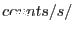
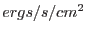

This task constructs the PPS product, grism spectra, extracted from an Optical Monitor image obtained with one of the OM grism-filters. The image is previously undistorted by omgprep and rotated in order to align the spectra with the image columns. The task makes use of a source-list produced by running omdetect on the same image. The output file contains tables with background subtracted spectrum rates & corresponding errors, background rates & error, spectrum flux & error. All rates are in Å, and the fluxes are in /Å.